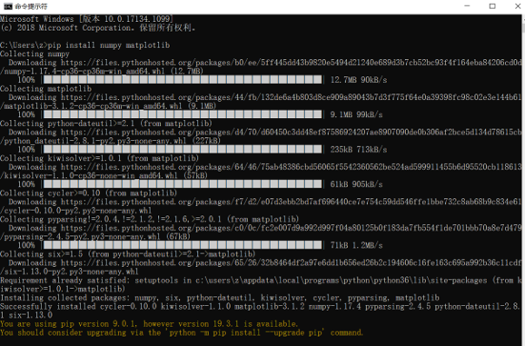
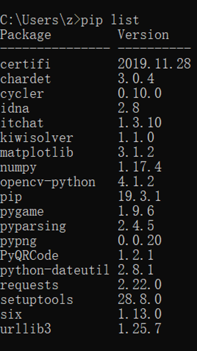
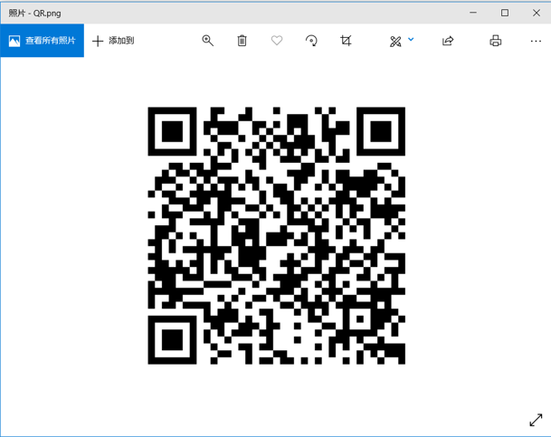
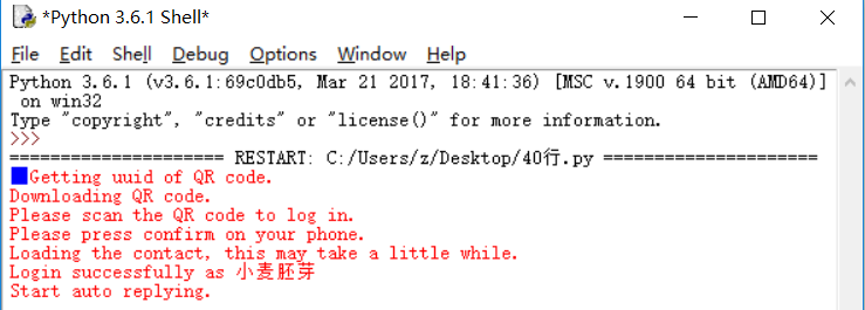

刚刚开始学python的时候，老师就说现代技术的发展最终目的就是为了方便，说白了，就是大家都"懒"， 懒得什么事情都亲力亲为，如果有工具能帮助我们做事，岂不妙哉？
而现代文明的产物——电脑，就可以替代我们人做很多事情。而在众多的编程语言中，尤其不能放过Python这个小妖精！
纵观四海，笔者终于找到了一组可以直接利用微信控制电脑关机的代码！（为啥我自己写不出来呢？因为‘程序设计，菜是原罪'🐶）
下载命令：pip install + 库名

用同样的方式下载其他的库。用pip list检查第三方库是否安装成功。

#作者：痴海
#链接：https://zhuanlan.zhihu.com/p/47676417
#来源：知乎
#著作权归作者所有。商业转载请联系作者获得授权，非商业转载请注明出处。
import itchat
import os
import time
import cv2
sendMsg = u"{消息助手}：暂时无法回复"
usageMsg = u"使用方法：\n1.运行CMD命令：cmd xxx (xxx为命令)\n" \
u"-例如关机命令:\ncmd shutdown -s -t 0 \n" \
u"2.获取当前电脑用户：cap\n3.启用消息助手(默认关闭)：ast\n" \
u"4.关闭消息助手：astc"
flag = 0 #消息助手开关
nowTime = time.localtime()
filename = str(nowTime.tm_mday)+str(nowTime.tm_hour)+str(nowTime.tm_min)+str(nowTime.tm_sec)+".txt"
myfile = open(filename, 'w')
@itchat.msg_register('Text')
def text_reply(msg):
global flag
message = msg['Text']
fromName = msg['FromUserName']
toName = msg['ToUserName']
if toName == "filehelper":
if message == "cap":
cap = cv2.VideoCapture(0)
ret, img = cap.read()
cv2.imwrite("weixinTemp.jpg", img)
itchat.send('@img@%s'%u'weixinTemp.jpg', 'filehelper')
cap.release()
if message[0:3] == "cmd":
os.system(message.strip(message[0:4]))
if message == "ast":
flag = 1
itchat.send("消息助手已开启", "filehelper")
if message == "astc":
flag = 0
itchat.send("消息助手已关闭", "filehelper")
elif flag == 1:
itchat.send(sendMsg, fromName)
myfile.write(message)
myfile.write("\n")
myfile.flush()
if __name__ == '__main__':
itchat.auto_login()
itchat.send(usageMsg, "filehelper")
itchat.run()
点击F5运行，会出现一个微信登录的验证二维码

用微信扫描，登录即可。

随后，微信文件助手就会发送这样的对话框
之后就可以实现远程操作辣！！比如当你选择了"睡眠模式"，但是过了一段时间你要睡觉了，不用电脑需要关机的时候，你就可以用微信实现远程操作了！